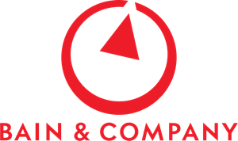

Hello, I'm Woonchae!
Bac +4 / Internship 6 months available from June • July 2022 / +33 7 81 66 91 69 • +82 7670 0268 • b00788584@essec.edu • woonchae0625@yonsei.ac.kr
Education

ESSEC Business School (Double Degree)
- Cergy, France
- Cumulative GPA: 16.76/20
- 09/2021-08/2023
Yonsei University, School of Business
- Seoul, Korea
- Academic Excellence Award, 2019-01
- Cumulative GPA: 4.09/4.5
- 03/2018-08/2023
Work Experience
Bain&Company
(05/2021-07/2021) Associate Consultant Intern - Full time AC position offered
- Engaged in building ESG new business development/business reform strategies for Korean chemical conglomerate
- Was offered full-time Associate Consultant (AC) position upon graduation due to project excellency
MouthMouse
(02/2020-04/2021) Co-Founder, CEO
- Ran the startup developing remote control device for smartphones usable with mouth for physically disabled people
- Built the company’s business model in assisting device market and directed product design, production, and sales. Awarded 3rd place prize in 2022 Yonsei Univerisity Campustown Entrepreneurship Competition
SK Center for Social value Enhancement Studies (CSES)
(12/2019-02/2021) Research Assistant
- Published 22 bi-weekly newsletter ‘Global SV Trend’, which was sent to every SK group executive / department
- Published 22 bi-weekly newsletter ‘Global SV Trend’, which was sent to every SK group executive / department
Extracurricular Activities & Honors
P&G CEO Challenge
(2021) Asia Pacific Round 1st Runner-Up, Korea National Round Top 1, Team Leader
- Built an end-to-end product launch process and market strategy of Oral B’s new product in Singapore
- Planned out Oral B’s customer strategy to increase its in-store and online presence in Korea based on market analysis
KPMG Ideathon
(2021, 2022) Korea National Round 1st Runner-Up (2022), 2nd Runner-Up (2021), Team Leader
- As team leader and business director, developed a new service MaGam - mask detection software based on AI technology
- As business director, developed a new service CO2Gather – AI based collective software platform helping consumers collect carbon reduction incentives, thereby connecting carbon reduction schemes of governments and enterprises to consumers